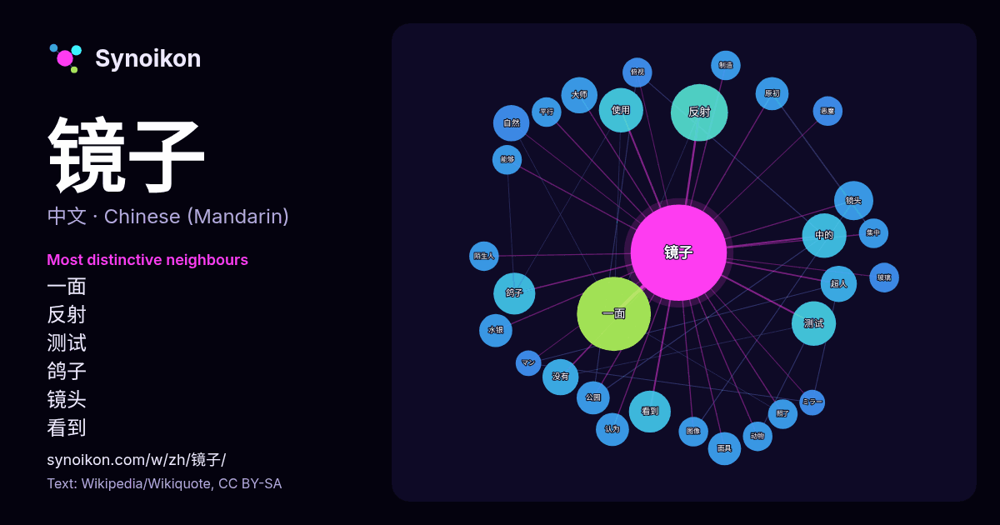

中文 · 每日一词列表
镜子
“mirror” · 来自维基百科, Wikiquote 307 次出现中其周围的词。

最具特色的邻近词
- 一面 25×
- 反射 15×
- 测试 9.5×
- 鸽子 9.0×
- 镜头 7.8×
- 看到 7.7×
- 大师 6.9×
- 超人 6.8×
- 水银 6.0×
- 原初 6.0×
- 面具 5.9×
- 自然 5.8×
- 中的 5.8×
- 公园 5.5×
- 俯视 5.0×
- 照了 5.0×
- 陌生人 5.0×
- 恶魔 5.0×
- 图像 4.9×
- 平行 4.8×
× = 比维基百科普通文本中多出的倍数。
最常见的邻近词
- 一面 25
- 反射 15
- 中的 9
- 使用 9
- 测试 9
- 看到 8
- 鸽子 8
- 镜头 7
- 大师 6
- 没有 6
- 自然 6
- 超人 6
- 公园 5
- 原初 5
- 水银 5
- 认为 5
- 面具 5
- 他的 4
- 代表 4
- 俯视 4
上下文
- 镜子的对照期中，鸽子不会去啄斑点。当加入镜子后，鸽子开始变得活跃，向镜子里探望并试图去啄围兜下面的斑点。诚然，未经训练的鸽子从未能够通过镜子实验。但是，鸽子通常无法碰到镜子，也不会有使用镜子必要的经验。给予鸽子这种经验并没有保证它能够通过镜子测试——事实上，鸽子直到最后一个测试之前，从没有在有镜子 Wikipedia snippets · 镜子测试
- 镜子薹草（学名：Carex phacota），又名镜子薹、七星斑囊果薹，是莎草科薹草属的植物。分布于台湾岛、日本、马来西亚、斯里兰卡、印度尼西亚、尼泊尔、印度以及中国大陆的山东、福建、江苏、四川、贵州、安徽、广东、江西、浙江、海南、广西、云南、湖南等地，生长于海拔470米至1 Wikipedia snippets · 镜子薹草
- 镜子超人（ミラーマン，Mirāman） (香港改稱「電光科學人」) 是圓谷製作公司所製作的特攝電視劇，于1971年12月5日到1972年11月26日在富士電視台播放，，共51話。 这是圓谷製作首个奥特曼系列以外的超人作品。以金城哲夫將自己執筆所寫作為禮物贈送給圓谷的原案為基礎，後在田口成光和滿田斉等 Wikipedia snippets · 镜子超人
- 联合国. 2025-10-31 [2026-05-01]. （原始内容存档于2025-11-13） （中文）. 国际观察丨“照见恶魔的镜子”——从爱泼斯坦案起底美国司法不公与权力黑幕-新华网. 新华网. [2026-05-01]. （原始内容存档于2026-02-20）. 头条：民主党公布新邮件 Wikipedia snippets · 唐納·川普
- 拖雷（蒙古语：ᠲᠤᠯᠤᠢ，汉语拼音字母：Tôlûi，鲍培转写：Tolui，西里尔字母：Толуй；意为“镜子”；1192年—1232年10月9日）又译图垒，是元太祖成吉思汗的幼子，排行第四。拖雷和正妻唆鲁禾帖尼生有四子：蒙哥、忽必烈、旭烈兀、阿里不哥。据《元史》，拖雷一共有子十一人。1227年8月2 Wikipedia snippets · 拖雷
- 就无话可说了’。噫嘻！异哉！鲁迅先生竟跑出了现社会，躲向牛角尖里去了。旧社会死去的苦痛，新社会生出的苦痛，多多少放在他眼前，他竟熟视无睹！他把人生的镜子藏起来了，他把自己回复到过去时代去了，噫嘻！异哉！鲁迅先生躲避了。” 郭沫若，《文艺战线上的封建馀孽》，《创造月刊》第2卷第1期，1928年8月，“ Wikipedia snippets · 鲁迅
- 6米的装饰绚烂的镜子。有据可查，它是闻名欧洲的美因茨选帝侯国镜子制造厂生产的产品，这座工厂由选帝侯洛塔尔·弗兰茨·冯·舍恩伯尔恩（Lothar Franz von Schönborn）于1698年建造，由菲利普·克里斯托弗·冯·埃尔塔尔监管。这个镜子大约是他送给第二任妻子克劳迪娅的礼物，如同许多洛尔出产的镜子 Wikipedia snippets · 白雪公主
- 无限反射镜是一种有两面或多面镜子组成的复合结构，这些镜子通常互相平行或接近平行。这种结构可以在镜子中产生无限多的虚像，以越来越小的姿态延伸至无限“远”。这种结构经常用单向玻璃做前面的镜子，但不用单向玻璃也可以达成效果。在艺术作品中，画面本身出现在画面中，再出现在画面中的画面中，称作德罗斯特效应。无限反射镜有时会用于室内装潢或艺术创作。 Wikipedia snippets · 无限反射镜
更多词
于 2026-10-09 以默认设置预先计算（±5 个词，中等语料）。交互式图可用实时数据刷新。
界面为机器翻译，欢迎指正。